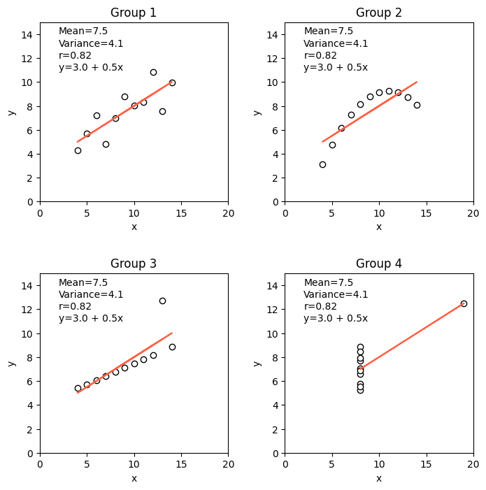

# Import modules
import pandas as pd
from scipy import stats
import matplotlib.pyplot as plt46 Anscombe’s quartet
In 1973, English statistician Francis John Anscombe emphasized the crucial role of graphical analysis in statistics through a seminal paper where he argued that visual inpsection of data through graphs not only reveals unique insights but also the main characteristics of a dataset. To illustrate his point, Anscombe created a synthetic dataset, known as Anscombe’s quartet, consisting of four distinct pairs of x-y variables. Each of the four datasets in the quartet has the same mean, variance, correlation, and regression line:
- Number of observations: 11
- Mean of the x variable: 9.0
- Mean of the y variable: 7.5
- Equation of linear regression model: y=3+0.5x
- Coefficient of determination (r^2): 0.667
- Coefficient of correlation (r): 0.817
Question: Despite their identical statistical metrics, can these four datasets considered similar?
# Load Ascombe's dataset
df = pd.read_csv('../datasets/anscombe_quartet.csv')
# Display entire dataset
df.head(11) | obs | x1 | y1 | x2 | y2 | x3 | y3 | x4 | y4 | |
|---|---|---|---|---|---|---|---|---|---|
| 0 | 1 | 10 | 8.04 | 10 | 9.14 | 10 | 7.46 | 8 | 6.58 |
| 1 | 2 | 8 | 6.95 | 8 | 8.14 | 8 | 6.77 | 8 | 5.76 |
| 2 | 3 | 13 | 7.58 | 13 | 8.74 | 13 | 12.74 | 8 | 7.71 |
| 3 | 4 | 9 | 8.81 | 9 | 8.77 | 9 | 7.11 | 8 | 8.84 |
| 4 | 5 | 11 | 8.33 | 11 | 9.26 | 11 | 7.81 | 8 | 8.47 |
| 5 | 6 | 14 | 9.96 | 14 | 8.10 | 14 | 8.84 | 8 | 7.04 |
| 6 | 7 | 6 | 7.24 | 6 | 6.13 | 6 | 6.08 | 8 | 5.25 |
| 7 | 8 | 4 | 4.26 | 4 | 3.10 | 4 | 5.39 | 19 | 12.50 |
| 8 | 9 | 12 | 10.84 | 12 | 9.13 | 12 | 8.15 | 8 | 5.56 |
| 9 | 10 | 7 | 4.82 | 7 | 7.26 | 7 | 6.42 | 8 | 7.91 |
| 10 | 11 | 5 | 5.68 | 5 | 4.74 | 5 | 5.73 | 8 | 6.89 |
# Define a linear model
lm = lambda x,intercept,slope: intercept + slope*x# Fit linear model to each dataset
slope_1, intercept_1, r_val_1, p_val_1, std_err_1 = stats.linregress(df.x1, df.y1)
slope_2, intercept_2, r_val_2, p_val_2, std_err_2 = stats.linregress(df.x2, df.y2)
slope_3, intercept_3, r_val_3, p_val_3, std_err_3 = stats.linregress(df.x3, df.y3)
slope_4, intercept_4, r_val_4, p_val_4, std_err_4 = stats.linregress(df.x4, df.y4)# Plot points and fitted line
plt.figure(figsize=(8,8))
plt.subplot(2,2,1)
plt.title('Group 1')
plt.scatter(df['x1'], df['y1'], facecolor='w', edgecolor='k')
plt.plot(df['x1'], lm(df['x1'],intercept_1, slope_1), color='tomato')
plt.xlabel('x')
plt.ylabel('y')
plt.xlim([0,20])
plt.ylim([0,15])
plt.text(2,14, f"Mean={df['y1'].mean():.1f}")
plt.text(2,13, f"Variance={df['y1'].var():.1f}")
plt.text(2,12, f"r={r_val_1:.2f}")
plt.text(2,11, f"y={intercept_1:.1f} + {slope_1:.1f}x")
plt.subplot(2,2,2)
plt.title('Group 2')
plt.scatter(df['x2'], df['y2'], facecolor='w', edgecolor='k')
plt.plot(df['x2'], lm(df['x2'],intercept_2, slope_2), color='tomato')
plt.xlabel('x')
plt.ylabel('y')
plt.xlim([0,20])
plt.ylim([0,15])
plt.text(2,14, f"Mean={df['y2'].mean():.1f}")
plt.text(2,13, f"Variance={df['y2'].var():.1f}")
plt.text(2,12, f"r={r_val_2:.2f}")
plt.text(2,11, f"y={intercept_2:.1f} + {slope_2:.1f}x")
plt.subplot(2,2,3)
plt.title('Group 3')
plt.scatter(df['x3'], df['y3'], facecolor='w', edgecolor='k')
plt.plot(df['x3'], lm(df['x3'],intercept_3, slope_3), color='tomato')
plt.xlabel('x')
plt.ylabel('y')
plt.xlim([0,20])
plt.ylim([0,15])
plt.text(2,14, f"Mean={df['y3'].mean():.1f}")
plt.text(2,13, f"Variance={df['y3'].var():.1f}")
plt.text(2,12, f"r={r_val_3:.2f}")
plt.text(2,11, f"y={intercept_3:.1f} + {slope_3:.1f}x")
plt.subplot(2,2,4)
plt.title('Group 4')
plt.scatter(df['x4'], df['y4'], facecolor='w', edgecolor='k')
plt.plot(df['x4'], lm(df['x4'],intercept_4, slope_4), color='tomato')
plt.xlabel('x')
plt.ylabel('y')
plt.xlim([0,20])
plt.ylim([0,15])
plt.text(2,14, f"Mean={df['y4'].mean():.1f}")
plt.text(2,13, f"Variance={df['y4'].var():.1f}")
plt.text(2,12, f"r={r_val_4:.2f}")
plt.text(2,11, f"y={intercept_4:.1f} + {slope_4:.1f}x")
plt.subplots_adjust(wspace=0.3, hspace=0.4)
plt.show()
Practice
Compute the root mean square error, mean absolute error, and mean bias error for each dataset. Can any of these error metrics provide a better description of the goodness of fit for each dataset?
Instead of creating the figure subplots one by one, can you write a for loop that will iterate over each dataset, fit a linear model, and then populate its correpsonding subplot?
References
Anscombe, F.J., 1973. Graphs in statistical analysis. The American Statistician, 27(1), pp.17-21.